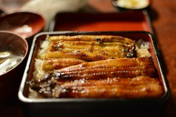

- Unagi, or eel, is found commonly in many parts of Japan, and also Europe!
- Unagi, the word, specifically refers to Japanese freshwater eel
- Freshwater eels are carnivorous
- Eel is often poisonous unless cooked!
- Unagi is high in protein, vitamin A, and calcium!
